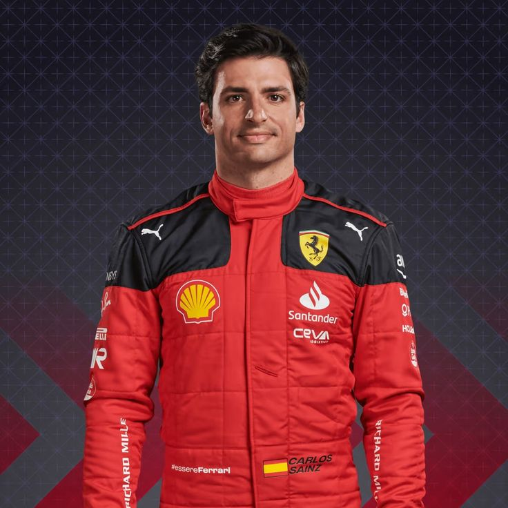

escuderias más exitosas
McLaren es una de las escuderías más históricas y exitosas en la Fórmula 1, con una rica tradición de innovación, velocidad y competencia de alto nivel. Fundada en 1963 por el piloto de origen neozelandés Bruce McLaren, la escudería ha sido un pilar fundamental en el automovilismo, conocida tanto por su enfoque tecnológico como por sus logros en la pista.

Ferrari es una de las marcas más icónicas en la historia de la Fórmula 1. Fundada en 1939 por Enzo Ferrari, la escudería ha sido sinónimo de pasión, velocidad y éxito en las competiciones más prestigiosas del automovilismo. A lo largo de los años, Ferrari ha logrado numerosos campeonatos mundiales, destacándose por su combinación de ingeniería avanzada, diseño innovador y pilotos talentosos. Además de su legado en la F1, Ferrari es conocida por sus vehículos deportivos de lujo y su reputación de excelencia en el mundo del motor. La escudería sigue siendo un pilar fundamental en la Fórmula 1, con millones de seguidores alrededor del mundo.

Mercedes es una de las escuderías más exitosas y respetadas en la Fórmula 1. Con una historia que se remonta a principios del siglo XX, Mercedes comenzó a participar en la F1 en 1954. Tras un largo periodo fuera de la competición, regresó en 2010 como equipo oficial, y desde entonces ha dominado la era moderna del deporte. Con avances tecnológicos de vanguardia y un enfoque en la innovación, Mercedes ha logrado múltiples campeonatos mundiales de constructores y pilotos, destacándose especialmente en la última década. La escudería es conocida por su consistencia, precisión y por contar con algunos de los mejores ingenieros y pilotos del mundo.
.png)
Red bull Racing es una de las escuderías de Fórmula 1 más exitosas y dominantes de la última década. Fundada en 2005 la escudería austriaca fue impulsada originalmente por el espíritu innovador de su propietario, el fabricante de bebidas energéticas Red Bull. Desde sus primeros años, el equipo se destacó por su enfoque agresivo en tecnología y estrategia, además de su fuerte apuesta en jóvenes talentos.
Pilotos Destacados
Los pilotos de F1 son atletas de alto rendimiento que reciben una preparación física y mental para soportar las velocidades de más de 300 km/h cada 15 días.Para competir en la Fórmula 1, los pilotos deben obtener la superlicencia, la cual es otorgada por la FIA y consiste en una licencia que se concede a los corredores que alcanzan en un periodo de 3 años ciertos logros en categorías inferiores y al menos 300 kilómetros en un F1.Estos kilómetros se les otorga a los jóvenes pilotos durante pruebas o test, que permiten a las promesas del futuro adaptarse y ponerse a prueba con los monoplazas.
Max Verstappen
Max Verstappen, nacido el 30 de septiembre de 1997 en Bélgica, es un piloto de Fórmula 1 destacado por su agresividad y habilidad al volante. Debutó en la F1 en 2015 con 17 años, convirtiéndose en el piloto más joven en competir.Ha obtenido múltiples victorias en Grandes Premios y se ha consolidado como un contendiente regular al título mundial.
Lando Norris
Lando Norris es un piloto británico de Fórmula 1 nacido el 13 de noviembre de 1999 en Bristol, Inglaterra. Tras destacar en categorías inferiores como la Fórmula 3 y la Fórmula 2, Norris se unió a McLaren en la F1 en 2019. Es conocido por su talento, carisma y habilidades al volante. En 2024, logró su primera victoria en la Fórmula 1 en el Gran Premio de Miami, demostrando su capacidad para manejar la presión y las condiciones difíciles.
Carlos Sainz
Carlos Sainz Jr es un piloto de Fórmula 1 nacido el 1 de septiembre de 1994 en Madrid, España. Comenzó su carrera en karting y ascendió rápidamente a categorías mayores como la Fórmula 3 y la Fórmula 2, donde demostró su gran talento. En 2015, debutó en la F1 con Toro Rosso (ahora AlphaTauri) y, a lo largo de su carrera, ha corrido para varios equipos, incluyendo, McLaren y Ferrari.
NEUMÁTICOS

neumático blando
Los neumáticos blandos en la Fórmula 1 son compuestos de goma más suaves, diseñados para ofrecer el mejor agarre y tiempos de vuelta rápidos. Su principal ventaja es la velocidad, pero se desgastan rápidamente, lo que requiere cambios frecuentes. Se usan estratégicamente en las primeras etapas de las carreras o en condiciones de pista cálida. Aunque su rendimiento es alto, su vida útil es limitada, lo que hace que los equipos deban gestionar su uso cuidadosamente para evitar pérdidas de rendimiento. En las temporadas recientes, los neumáticos blandos se identifican por el color rojo.

neumático medio
Los neumáticos medios en la Fórmula 1 están diseñados para ofrecer un equilibrio entre rendimiento y durabilidad. No tienen el agarre extremo de los blandos, pero tampoco se desgastan tan rápidamente. Son ideales para condiciones de pista más frías o cuando los equipos buscan una estrategia de carrera más prolongada. Estos neumáticos son identificados por el color amarillo y son una opción común para muchas estrategias de carrera, permitiendo un buen compromiso entre velocidad y resistencia.

neumático duro
Los neumáticos duros en la Fórmula 1 son los más duraderos de todos, diseñados para ofrecer una vida útil más larga y menor desgaste. Tienen un menor agarre en comparación con los neumáticos blandos y medios, lo que puede hacerlos menos efectivos en términos de rendimiento en condiciones de pista más calientes o cuando se necesita un rendimiento extremo. Sin embargo, su resistencia al desgaste los hace ideales para condiciones de carrera donde se busca maximizar el tiempo entre paradas en boxes. Estos neumáticos están identificados por el color blanco.
circuitos más famosos
La máxima categoría del automovilismo visita pistas alrededor del mundo, y ha llegado a países como Sudáfrica, Rusia, China, México, Brasil, Argentina, EUA, Turquía, Portugal, Australia y más, en 74 circuitos diferentes a lo largo de la historia.Los circuitos deben ser de asfalto y requieren de una certificación por parte de la FIA, quien supervisa que cuenten con todos los requerimientos. Las pistas pueden ser en circuitos establecidos o callejeos, los cuales se pueden montar y desmontar.

baku

barcelona
imola
interlagos
jeddah

silverstone